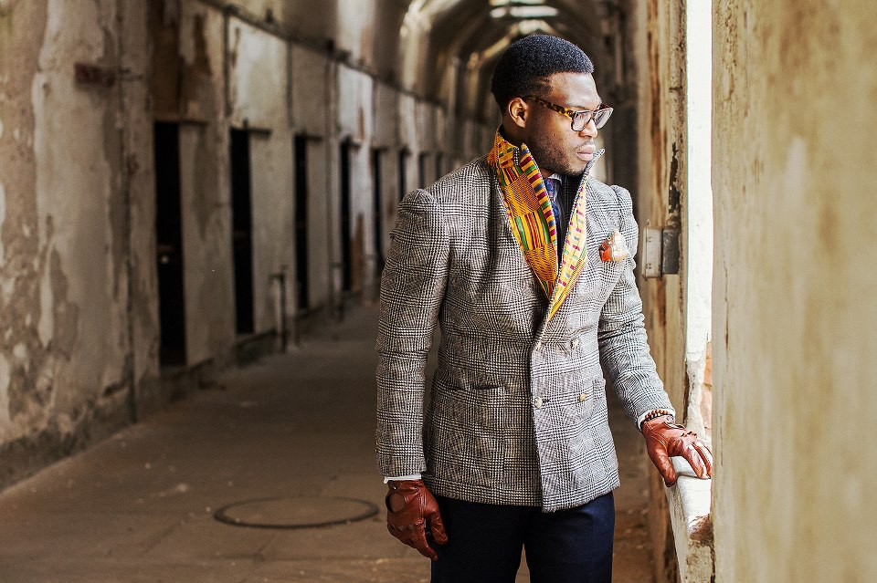

Ikire Jones
A self described “cultural ambassador,” Wale Oyejide, is the Nigerian designer behind the men’s fashion brand Ikire Jones. The line has taken heritage to a whole nother level using traditional Italian design elements and infusing them with African inspired prints and colors. Dressed to impress is an understatement. These clothes are a nod to the dapper days and tailoring of the “gentleman” with a modern flair.
Scarves and pocket squares are wool and silk with an afrofuturist edge. Double breasted jackets like The Dumile are lined with the vibrancy of a kente cloth, or subtle with the pop of a collar. Sports coats like The Evan are form fitting and come in a wide spectrum of patterns. These are not your average dashikis. Each piece comes with a story and a philosophy behind its inception. Ikire Jones is the tale of a man with bold cultural ties.amfm: Does your music influence your design process and the designs themselves? Which one were you doing first? How did you get into designing?
ikire jones: Not directly, no. I listen to a lot of music when I work, so the process is driven by that. But with regarding to actually writing music versus design, I tend to draw my inspirations and creative energy from the same source. To me, producing music is ultimately as rewarding as putting out good design work, and vice versa. It's the same fix. I was a producer/vocalist for a number of years before I became a designer. I don't miss it because I'm still creating. Now, the medium is wearable instead of listenable.amfm: How do you feel that your designs marry the old with the new? What inspires you about that old time classic style and why do you think it's in its renaissance with the resurgence of dapper fashion?
ikire: There isn't anything new under the sun. The use of African-inspired prints in the menswear industry has certainly been seen before. I think that our interpretations are unique in that we approach what we're doing from a genuine place. Obviously the fact that I grew up in Nigeria lends some authenticity to the approach we've taken, but more important is the degree of respect one pays when borrowing from a particular culture.amfm: What about African clothing, colors, and patterns do you love and what about it inspires you? What's the significance of the name Ikiré Jones?
ikire: In general, African clothing tends to embrace color in a controlled but bombastic way. I appreciate that I come from a culture that is not afraid to be celebratory with its appearance. One doesn't have to look like they're going to a funeral to be taken seriously. Ikiré is a village that my father was raised in. In naming the brand after it, I sought to marry my African and African-American upbringing.amfm: How does the storytelling element fit into your designs? Word is you’re a big Kanye West fan, what about Kanye inspires you?
ikire: Without our stories and heritage, we are a people without a past and a people without direction. For me, it's important that all of the pieces our company produces be more than forgettable items that live in a closet. Each of them is intended to be a reminder of the many fantastic paths our people have taken and hopefully serve as inspiration for where we can still go. In general, I'm a fan of Kanye West's music. I'm a bigger admirer of what he represents: The idea that anyone with a dream and the backbone to follow through can carve his own road out of life.
amfm: You said this particular collection is a love letter to your upbringing, can you talk a bit about that sentiment? What about your childhood and upbringing in Nigeria influenced you? Did you grow up around well dressed men?amfm: Growing up, I was never particularly interested in clothing. Even now, Ikiré Jones is a clothing company, that at it's core, is about much more than clothes. Our ethos addresses self discovery and the attempt to create a truly fulfilled life. Clothing is just the vehicle for us to push our gospel.
|  |  |
For more from Ikire Jones:
Ikire Jones' Website
Ikire Jones on Facebook
photo credits: david evan mcdowell